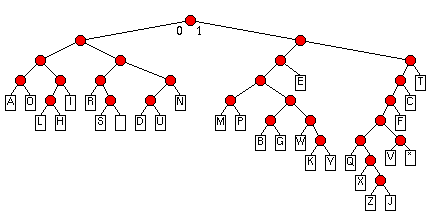

| ECE291 |
Computer Engineering II |
Lockwood, Spring 1998 |
Machine Problem 2: Huffman Compression
| Due Date | Friday 2/20/98 |
| Purpose |
Subroutines, User I/O, Compression algorithms
|
| Points | 50 |
Introduction
Compression is extremely useful
for data such as text, images, sound, and video.
Compression allows audio files (such as MP3s) to be compressed
to a fraction of their original size, permits hundreds of channels
of video to be transmitted through a single digital satellite system (DSS);
enables a modem to achieve higher throughput, and can increase the
storage capacity of a disk or tape drive.
Non-lossy compression algorithms, such as the one studied in this MP,
completely preserve the data they compress.
By representing the most frequently recurring data patterns
using the smallest bit sequence, the total size of the data can
be greatly reduced.
In this MP, we will write an interactive assembly program
that encodes and decodes text messages using Huffman compression.
The text message will consist of symbols that include:
the 26 letters ('A'..'Z'), the space (' '), and the asterisk ('*').
Each symbol will be represented using a variable-bit-length encoding.
Huffman Encoding
In general, the generation of an optimal Huffman encoding table
is data dependent.
The first step requires scanning through a document
to determine each symbol's frequency of occurance.
Next, each symbol is represented as a node in a graph,
with a weight equal to its probability of occurance.
The main body of the algorithm involves sequentially combining
the least frequenctly occuring pairs of nodes into a tree-structured
supernode. The parent of a supernode is given a weight equal
to the sum of the weighs of the children. The algorithm continues
combining nodes and supernodes until all nodes have been combined
into a single tree. Once finished, all
of the symbols appear as leaves in the tree.
The encoding of the symbols is determined by assigning '0' and '1' values
to the branches of the tree. The encoded value is determined by
following the branches of the tree, starting at the root.
The number of bits required
to represent a symbol is equal to the depth of the leaf. Frequent
letters are represented with fewer bits, while infrequent letters are
represented with more.
For this MP, you are given the Huffman encoding table. This table
was generated using Prof. Lockwood's PhD dissertation
as a representative sample of standard writing.
(The question of whether or not Prof. Lockwood's writing actually
reflects standard writing is an entirely different question...).
A Perl script was run that scanned the entire file and counted
the frequency of each letter in the document. The results of this
are shown below:
e 0.121 t 0.105 i 0.081 o 0.072 a 0.068 n 0.065 s 0.062 r 0.061 c 0.046
h 0.044 l 0.043 u 0.033 d 0.033 p 0.030 m 0.028 f 0.024 g 0.019 b 0.017
w 0.014 v 0.012 y 0.009 k 0.005 q 0.004 x 0.003 z 0.001 j 0.001 |
As expected, vowels and common letters such as 'E', 'T', 'I', and 'O'
appeared most often.
The letters 'Z' and 'J' appeared least frequently.
Using the algorithm described above,
the following encoding tree was generated:
(The space and asterisk symbols were added
later by splitting the nodes for nodes for S and V)

In this tree, the letter 'E' can be found by following the right-left-right
branches. By assigning '0' and and '1' values to the left
and right branches, respectively, this corresponds to an encoding
pattern of 101. Likewise, the letter 'Z' has an encoding of:
110000110. Note that decoding of Huffman codes is somewhat
tricky due to the fact that symbols can be represented with
a differing number of bits.
Messages and documents can be formed by appending symbols together.
The message 'HELLO', for example, can be compactly represented
with only 22 bits as: 00101 101 00100 00100 0001. To clearify
the encoding, spaces were shown between the symbols. In memory, however,
adjacent symbols would occupy adjacent bit positions. In general,
we will be treating memory as an array of bits. Because the
symbols do not fall on even byte boundries, it is up to the decoding algorithm
to decide where one symbol stops and the next begins.
User Interface
- You are given the framework of a program which provides
a menu-driven interface.
- By selecting an option from the menu, the user can:
- Enter text message or binary data
- Print the contents of the message or buffer
- Encode a message or decode the buffer
- All binary data is entered and displayed from left-to-right with
the Least Significant Bit (LSB) first.
Sample Input & Output
- Results from a sample run of the program are shown below:
(Boldface letters are were provided as input)
---------- MP2 Menu -----------
Enter (T)ext (B)inary
Print (M)essage (R)buffeR
Huffman (E)ncode (D)ecode
-------- [ESC] = exit ---------
B Enter Binary Data (LSBit .. MSBit): 101
D Text Message= E
T Enter Text Message: Z
E Compressed Size = 9 bits ~= 1 bytes. (LSBit .. MSBit)
11000011 0
T Enter Text Message: HELLO
E Compressed Size = 22 bits ~= 2 bytes. (LSBit .. MSBit)
00101101 00100001 000001 |
- To understanding the program, run the library-based MP2.EXE
program interactively.
Try compressing and decompressing your own data.
- A sample input data, test1.in, is included with this MP.
Use the following command to pipes this file into MP2:
mp2 < test1.in
Your results should match test1.out.
- Your program should work for all types of data.
TAs will provide you with additional test cases when you demo your MP.
Data Structures
- A few variables have already been defined for you in the program
framework.
- TextMsg: String of ASCII bytes holding un-encoded text.
The end of this string should be always be marked with
the '$' character.
- Buffer: A packed array of bytes that hold the
Huffman-encoded data.
The first huffman code begins with the least
significant bit (LSBit) of the first byte (Buffer[0]) in the array.
The next huffman code begins at the next bit location in the buffer.
Note that one variable-length symbol may overlap multiple
byte locations, and that no bits are wasted between symbols.
- BufferLength: A word which indicates how many
bits are stored in buffer.
- HuffCodes: An array of structures that
that define how symbols are encoded.
This table is defined in the file HUFFCODE.INC
and is Include'd into MP2.ASM.
For each of the 28 symbols (letters+space+asterisk),
this array contains: the
ASCII letter, the Huffman-encoded bit pattern (in two formats),
and the number of bits in the symbol.
The DownEncoding specifies the symbol with the most significant
bit listed first. The UpEncoding specifies the same symbol
in reverse bit order (i.e., with the Least significant bit first).
Both formats are given for your convenience.
It is easy to confuse the bit ordering.
Recall that MASM and CodeView both present data
with the most significant bit listed first.
- A few constants have also been defined:
- TextMsgMaxLength == 70 bytes,
i.e., Just less than one line of full-screen text.
- BufferMaxLengthBits == 9*TextMsgMaxLength bits,
i.e., the longest encoding times the longest Buffer length.
- BufferMaxLength == 1+BufferMaxLengthBits/8 bytes,
Number of bytes required to hold Buffer, rounded up to next byte.
Procedures
- This assignment has eight procedures.
You will receive credit for this
assignment by replacing each of the eight
procedures listed below with your own code.
- Experiment with the working code
to gain a full understanding of how the programs works.
- Your program should exactly match the functionality of the library
subroutines.
- All subroutines should be modular. They should use the stack to
preserve the value of any registers they may modify.
- Five of the fifty points are earned by comparing the
effiency of your your code against the library routines.
- PrintTextMsg
- Purpose: Prints the contents of the TextMsg
variable.
- Inputs: TextMsg variable
- Outputs: Writes to screen
- Hints: Use LIB291 Functions where appropriate.
- Points: 5
- ReadTextMsg
- Purpose: Read TextMsg from the keyboard.
- Converts lowercase letters to uppercase letters
- Allows backspacing (BS = ASCII 8)
- Ignores line feeds (LF = ASCII 10)
- Prevents Underflow and Overflow of variables
(i.e., writing past the beginning or end of TextMsg)
- Terminates with a carriage return (CR = ASCII 13)
- Rejects any invalid input and beeps
- Marks end of TextMsg with the '$'.
- Inputs: Keyboard
- Outputs: TextMsg variable
- Hint: To erase a character from the screen, print
a backspace, then whitespace, then backspace.
- Points: 5
- PrintBuffer
- Purpose: Prints the size contents of the binary
Buffer array
- Prints 8 bits at a time
- Prints least significant bit of each symbol first.
- Prints 5 bytes (40 bits) per line
- Inputs: Buffer & BufferLength variables
- Outputs: Writes to screen
- Hint: Review your shifting techniques and modulo arithmetic!
- Points: 5
- ReadBuffer
- Purpose: Read binary Buffer from the keyboard.
- Accepts only 0's and 1's
- Allows backspacing
- Prevents Underflow and Overflow of variable
- Terminates with a carriage return (CR = ASCII 13)
- Ignores line feeds (LF = ASCII 10)
- Rejects any invalid input and beeps
- Sets BufferLength = number of bits read
- Inputs: Keyboard
- Outputs: Buffer and BufferLength variable
- Points: 5
- Encode
- Purpose: Encodes a single ASCII character into a
huffman symbol, as defined above.
- Input: AL = ASCII character
- Outputs:
- AX = Symbol
- DH = Symbol-size (Number of bits)
- Notes: This function is called by EncodeHuff
- Points: 5
- AppendBufferN
- Purpose: Appends a variable-length symbol to the end of
the Buffer array.
- Inputs:
- AX = Symbol
- DH = Symbol-size (Number of bits)
- Output: Appends symbol-size bits to Buffer then
adds symbol-size to BufferLength
- Notes: This function is called by EncodeHuff
- Points: 5
- EncodeHuff
- Purpose: Encodes TextBuf to Buffer as described above
- Input: TextMsg
- Output: Buffer & BufferLength Variables
- Notes: Calls AppendBufferN and Encode
- Points: 5
- DecodeHuff
- Purpose: Decodes Buffer to TextBuf as described above
- Inputs: Buffer & BufferLength Variables
- Output: TextMsg
- Hints: Create a suitable data stucture to assist in decoding.
- Points: 10
- Performance
- Purpose: You are encouraged to write efficient code.
The 'P' button allows you to measure the performance of your code.
For any given message in TextMsg, the PerformanceTest routine
will count how many iterations of
DecodeHuff and EncodeHuff your program can
execute within 1/18th of a second. The higher the number, the better.
- You can only get performance points if you complete the
Encode, AppendBufferN, DecodeHuff,
and EncodeHuff routines.
- Points
- 10% or more faster than crippled library code: 5 points
- As fast as library code: 4 points
- Within 90% as fast as library code: 3 point
- Within 50% as fast as library code: 2 point
- Within 10% as fast as library code: 1 point
- Incomplete or non-functional routine: 0 points
Preliminary Procedure
- Copy the
empty MP2 program (MP2.ASM),
huffman encoding table (HUFFCODE.INC),
sample input file (test1.in),
corresponding output files (test1.out),
libraries (libmp2.lib, lib291.lib), and
Makefile from the network drive to your home directory
with the following command:
xcopy /s I:\ece291\mp2 F:\mp2
Alternatively, from home, you can download the same files as
mp2.zip.
- As with MP0 and MP1, run NMake to build an executable program
using the given ECE291 library functions.
- As with MP0 and MP1, use a text editor to modify the program.
As given, the program uses LIBMP2 routines
to implement all
functionality. To receive full credit for the assignment,
you will need to implement each of the subroutines described above with
your own code.
- As with MP0 and MP1, use CodeView (CV) to debug and test your
program.
Because you only receive credit for procedures that function completely
as specified, it is best to debug each routine individually.
- By modifying a few comments, you can mix and match usage of your
own code and Library routines. You may notice that the LIBMP2
routines contain extraneous and difficult-to-read code. They
are not meant to be unassembled!
Final Steps
- Print a copy of the MP2 grading sheet.
- Demonstrate MP2.EXE to a TA or to the instructor.
- Be prepared to answer questions about any aspect of the operation
of your program. The TAs will not accept an MP if you cannot fully
explain all operations of your code.
- Your program must work for all possible data patterns.
Additional test patterns will be listed on the grade sheet.
- The TA will determine performance points using a sample message
- Handin in your program by running:
A:\Handin YourWindowsLogin
- Print MP2.ASM
- Staple the MP2 grading sheet to the front of your MP2.ASM file
and give both to the same TA that approved your demonstration.
HUFFCODE.INC (Huffman Encoding Table)
; Using Lockwood's PhD thesis as a model for typical English usage
; The frequencies of each letter were determined as:
;
; e 0.121 t 0.105 i 0.081 o 0.072 a 0.068 n 0.065 s 0.062 r 0.061 c 0.046
; h 0.044 l 0.043 u 0.033 d 0.033 p 0.030 m 0.028 f 0.024 g 0.019 b 0.017
; w 0.014 v 0.012 y 0.009 k 0.005 q 0.004 x 0.003 z 0.001 j 0.001
;
; Huffman's algorithm was then used to generate the variable length encoding
; for these symbols.
; Format: ASCII Letter, Pattern (MSB first), Pattern (LSB first), # bits)
HuffCodes HuffCode<' ', 01011b,11010b ,5>
HuffCode<'A', 0000b,0000b ,4>
HuffCode<'B', 100100b,001001b ,6>
HuffCode<'C', 1101b,1011b ,4>
HuffCode<'D', 01100b,00110b ,5>
HuffCode<'E', 101b,101b ,3>
HuffCode<'F', 11001b,10011b ,5>
HuffCode<'G', 100101b,101001b ,6>
HuffCode<'H', 00101b,10100b ,5>
HuffCode<'I', 0011b,1100b ,4>
HuffCode<'J', 110000111b,111000011b ,9>
HuffCode<'K', 1001110b,0111001b ,7>
HuffCode<'L', 00100b,00100b ,5>
HuffCode<'M', 10000b,00001b ,5>
HuffCode<'N', 0111b,1110b ,4>
HuffCode<'O', 0001b,1000b ,4>
HuffCode<'P', 10001b,10001b ,5>
HuffCode<'Q', 1100000b,0000011b ,7>
HuffCode<'R', 0100b,0010b ,4>
HuffCode<'S', 01010b,01010b ,5>
HuffCode<'T', 111b,111b ,3>
HuffCode<'U', 01101b,10110b ,5>
HuffCode<'V', 1100010b,0100011b ,7>
HuffCode<'W', 100110b,011001b ,6>
HuffCode<'X', 11000010b,01000011b ,8>
HuffCode<'Y', 1001111b,1111001b ,7>
HuffCode<'Z', 110000110b,011000011b ,9>
HuffCode<'*', 1100011b,1100011b ,7>
; Note: The symbols for space and * were added after calculation
; of the Huffman encoding by splitting the nodes for S and V.
MP2.ASM (Program framework)
PAGE 75, 132
TITLE ECE291:MP2:MP2-Compress - Your Name - Date
COMMENT * Data Compression.
For this MP, you will write an interactive program which uses
Huffman compression to compress and decompress textual data.
By represents the most frequently used letters with the
smallest number of bits, Huffman encoding can achieve
significant data compression.
ECE291: Machine Problem 2
Prof. John W. Lockwood
Unversity of Illinois
Dept. of Electrical & Computer Engineering
Spring 1998
Ver 2.0 *
;====== Constants =========================================================
BEEP EQU 7
BS EQU 8
CR EQU 13
LF EQU 10
ESCKEY EQU 27
SPACE EQU 32
HuffCode STRUCT
letter BYTE ? ; Letter to encode
DownEncoding WORD ? ; Encoding: MSBit first
UpEncoding WORD ? ; Encoding: LSBit first
blength BYTE ? ; Bit Encoding Length
HuffCode ENDS
TextMsgMaxLength EQU 70 ; Bytes ; Limit text messages to one line
BufferMaxLengthBits EQU TextMsgMaxLength * 9 ; Worst case: all 9-bit encodes
BufferMaxLength EQU 1 + (BufferMaxLengthBits)/8 ; Bytes
;====== Externals =========================================================
; -- LIB291 Routines (Free) ---
extrn kbdine:near, kbdin:near, dspout:near ; LIB291 Routines
extrn dspmsg:near, binasc:near, ascbin:near ; (Always Free)
extrn PerformanceTest:near ; Measures performance of your code
extrn mp2xit:near ; Exit program with a call to this procedure
; -- LIBMP2 Routines (Replace these with your own code) ---
extrn PrintBuffer:near ; Print contents of Buffer
extrn ReadBuffer:near ; Read Buffer from keyboard
extrn ReadTextMsg:near ; Read TextMsg from keyboard
extrn PrintTextMsg:near ; Print contents of TxtMsg
extrn Encode:near ; Encode ASCII -> n-bit
extrn AppendBufferN:near ; Append N bits to Buffer
extrn EncodeHuff:near ; Huffman Encode TextMsg -> Buffer
extrn DecodeHuff:near ; Huffman Decode Buffer -> TextMsg
;====== SECTION 3: Define stack segment ===================================
stkseg segment stack ; *** STACK SEGMENT ***
db 64 dup ('STACK ') ; 64*8 = 512 Bytes of Stack
stkseg ends
;====== SECTION 4: Define code segment ====================================
cseg segment public 'CODE' ; *** CODE SEGMENT ***
assume cs:cseg, ds:cseg, ss:stkseg, es:nothing
;====== SECTION 5: Variables ==============================================
Buffer db BufferMaxLength dup(0) ; Data Buffer for encoded Message
TextMsg db TextMsgMaxLength dup('$'), '$' ; Text Message
BufferLength dw 0 ; Number of bits in buffer
crlf db CR,LF,'$' ; DOS uses carriage return + Linefeed for new line
PBuf db 7 dup(?)
PUBLIC Buffer, TextMsg, BufferLength, HuffCodes
Include huffcode.inc ; Huffman Encoding Table
;====== Procedures ========================================================
; Your Subroutines go here !
; ---- ----------- -- ----
;====== Main procedure ====================================================
MenuMessage db CR,LF, \
'----------- MP2 Menu -----------',CR,LF,\
' Enter (T)ext (B)inary',CR,LF, \
' Print (M)essage (R)buffeR',CR,LF, \
' Huffman (E)ncode (D)ecode',CR,LF, \
'---- [ESC] or (Q)uit = exit ----',CR,LF,'$'
main proc far
mov ax, cseg
mov ds, ax
MOV DX, Offset MenuMessage
CALL DSPMSG ; Display Menu
MainLoop: MOV DX, Offset CRLF
CALL DSPMSG
MainRead: CALL KBDIN ; Read Input
CMP AL,'a'
JB MainOpt
CMP AL,'z' ; Convert Lowercase to Uppercase
JA MainOpt
SUB AL,'a'-'A'
MainOpt: CMP AL,'T'
JNE MainNotT
Call ReadTextMsg ; Read in a text message
JMP MainLoop
MainNotT: CMP AL,'B'
JNE MainNotB
Call ReadBuffer ; Read in a binary message
JMP MainLoop
MainNotB: CMP AL,'M'
JNE MainNotM
Call PrintTextMsg ; Print TextMsg
JMP MainLoop
MainNotM: CMP AL,'R'
JNE MainNotR ; Print Buffer
Call PrintBuffer ; (show least significants bit first)
JMP MainLoop
MainNotR: CMP AL,'E'
JNE MainNotE
Call EncodeHuff ; Huffman Encode Message
Call PrintBuffer ; and print result
JMP MainLoop
MainNotE: CMP AL,'D'
JNE MainNotD
Call DecodeHuff ; Huffman Decode Message
Call PrintTextMsg ; and show result
JMP MainLoop
MainNotD: CMP AL,'P'
JNE MainNotP ; Performance Test
MOV SI, offset EncodeHuff
MOV DI, offset DecodeHuff
Call PerformanceTest
JMP MainLoop
MainNotP: CMP AL,ESCKEY
JE MainDone ; Quit program
CMP AL,'Q'
JE MainDone
JMP MainRead ; Ignore any other character
MainDone: call MP2xit ; Exit to DOS
main endp
cseg ends
end main